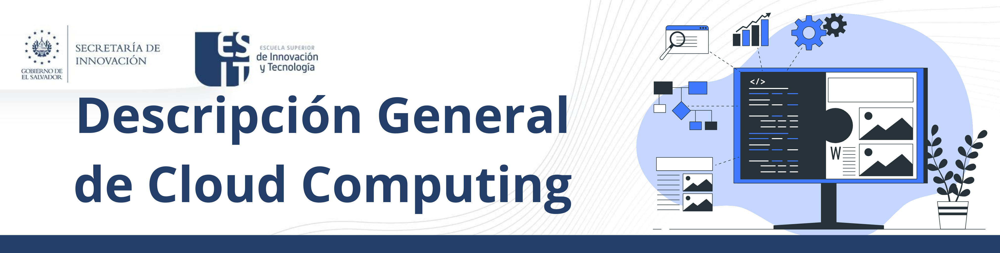
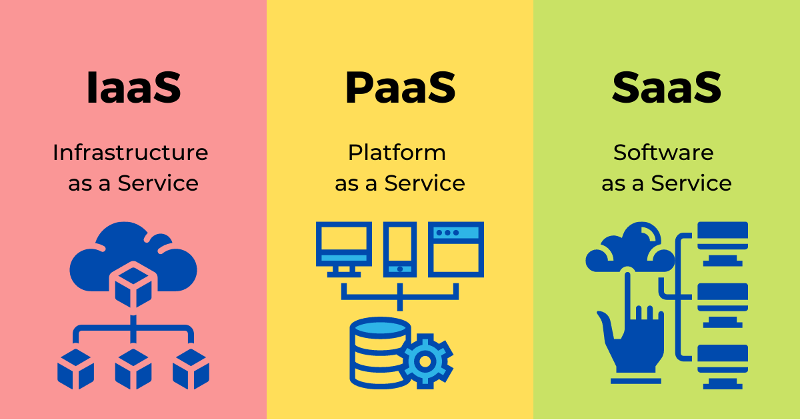
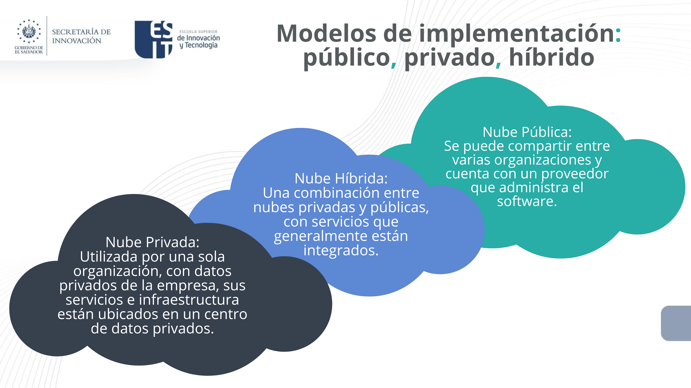

3. Cloud Computing y Programación
2. Descripción General
No existe una definición estándar aceptada universalmente, aunque es la del Instituto NIST de los Estados Unidos la más referenciada. El NIST ha definido la computación en nube (cloud computing) como:
"Un modelo que permite el acceso ubicuo, adaptable y bajo demanda en red a un conjunto compartido de recursos de computación configurables (por ejemplo: redes, servidores, equipos de almacenamiento, aplicaciones y servicios) que se pueden aprovisionar y liberar rápidamente con un mínimo esfuerzo de administración o interacción del proveedor de servicios."
La organización internacional ISO/IEC define la computación en la nube en términos muy similares: “Paradigma para permitir el acceso de red a un conjunto de recursos compartidos, escalables y elásticos, físicos o virtuales con aprovisionamiento de autoservicio y administración bajo demanda”. En comparación con las TI tradicionales en las instalaciones y, dependiendo de los servicios en la nube que seleccione, la computación en la nube ayuda a hacer lo siguiente:
Reducir los costos de TI
La nube le permite reducir algunos o la mayoría de los costos y el esfuerzo de comprar, instalar, configurar y administrar su propia infraestructura local.
Mejore la agilidad y el tiempo de generación de valor
Con la nube, su organización puede empezar a utilizar aplicaciones empresariales en cuestión de minutos, en lugar de esperar semanas o meses a que el departamento de TI responda a una solicitud, compre y configure el hardware de soporte e instale el software. La nube también le permite capacitar a ciertos usuarios (específicamente desarrolladores y científicos de datos) para que se ayuden ellos mismos con el software y la infraestructura de soporte.
Escale de manera más fácil y rentable
La nube proporciona elasticidad; en lugar de comprar capacidad excedente que permanece sin usar durante períodos lentos, puede aumentar o reducir la capacidad en respuesta a picos y caídas en el tráfico. También puede aprovechar la red global de su proveedor de nube para acercar sus aplicaciones a usuarios de todo el mundo.
Los tipos de servicios de cloud computing son:

Cada uno con distinto grado de uso de componentes de software y hardware.
Características del IaaS
Es el acceso a hardware virtualizado bajo demanda.
- Permite reducir gastos de un centro de datos y costos de mantenimiento.
- Proporciona mayor seguridad ante desastres pues los proveedores cuentan con la tecnología y personal necesarios.
- Facilita el escalamiento si las necesidades del negocio incrementan, sin realizar grandes inversiones.
- Permite una mayor atención en el giro de la empresa, delegando el control del centro de datos a alguien más capacitado.
Características del PaaS
Es el acceso a plataformas de desarrollo bajo demanda para aplicaciones.
- Reduce el tiempo de programación al incluir software de planeación de proyectos.
- Utiliza herramientas sofisticadas a un precio asequible.
- Recurre a la colaboración de equipos de trabajo en diferentes partes del mundo.
Características del SaaS
Es el acceso a aplicaciones desde un navegador de internet.
- Estas aplicaciones no consumen recursos del dispositivo que las utiliza.
- La infraestructura, plataforma, software y almacenamiento corre por cuenta del proveedor de la nube.
- Las aplicaciones son escalables.
- El software siempre se encuentra actualizado.
Modelos de implementación:

Obra publicada con Licencia Creative Commons Reconocimiento Compartir igual 4.0